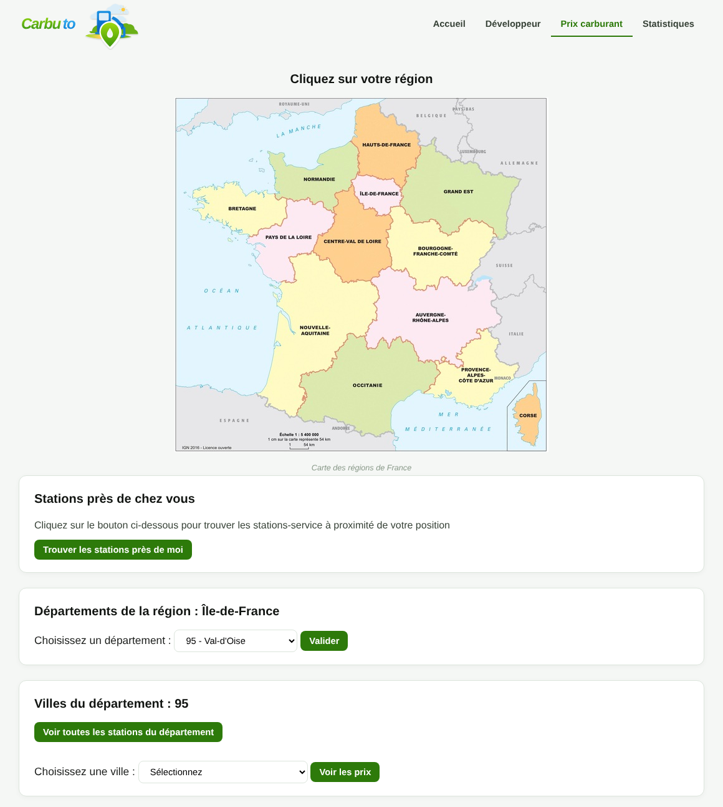

Carbuto
Projet de groupe de L2 avec Mariam Traore. Carbuto est un site en PHP qui affiche les prix des carburants par département et par ville, avec une carte. Je me suis occupé de la page d'accueil, du plan du site, de la page de film aléatoire, des statistiques de visites avec le diagramme, et de la localisation des visiteurs par adresse IP avec l'API IP2Location.
- PHP
- HTML
- CSS
- CSV
- XML
- API REST (prix des carburants, Ghibli, IP2Location)
